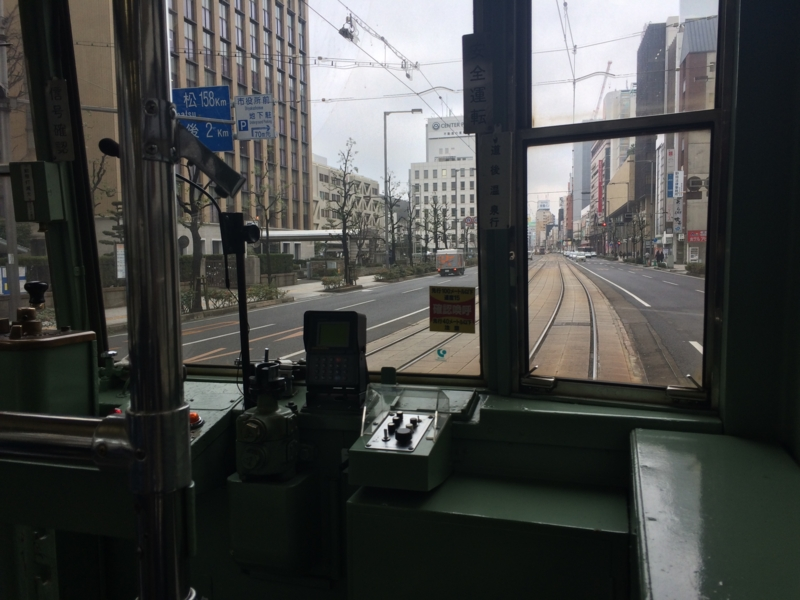
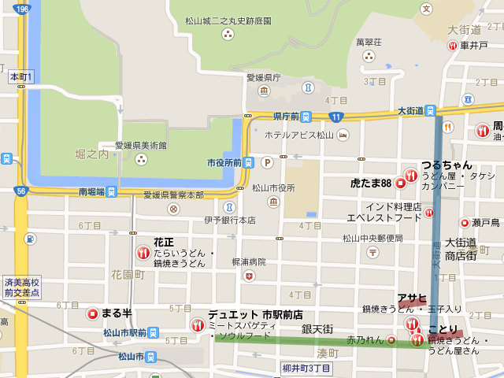
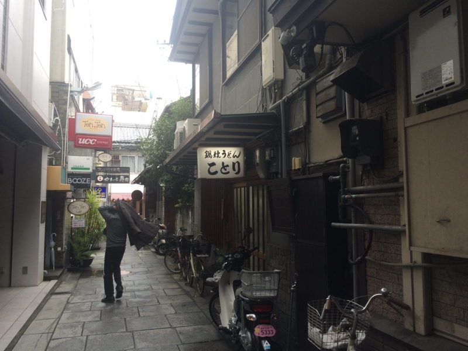
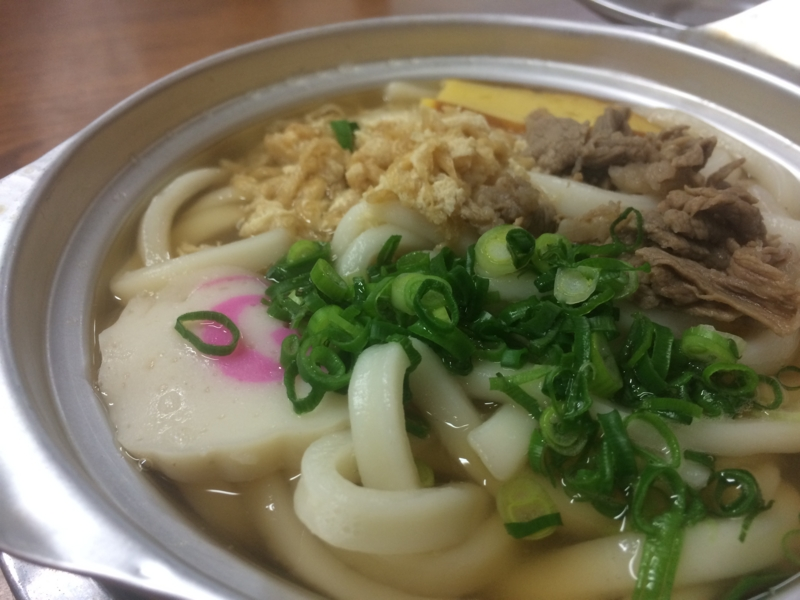
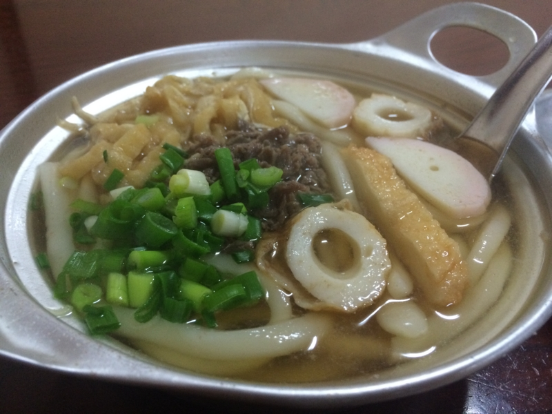

鍋焼きうどん：この前は「アサヒ」に行ったので、今度は「ことり」に行ってきた
公開日：

ちょっと市役所に行く用事があったので（税金の申告のために、住基カード作って電子署名書いてもらってた）ので、ちょっと足を伸ばし、また鍋焼きうどん食べに行った。前回は「アサヒ」にいったので、今回は「ことり」。よく知らないけど、松山の鍋焼きうどん界を牛耳るのがこの二店舗なのだという。
場所は、ここら辺。自分は市役所からてけてけ歩いたけど、まぁ、10分ちょいぐらい？ たいした距離じゃない。

銀天街の脇に入ったところにあるのだけど、注意してみないとよくわかんないかも。

前回紹介した『永遠のゼロ』の漫画版の描写とほぼ同じで、漫画家の人ってやっぱり絵がうまいんだなーと思った（小並感
早速注文。稲荷寿司もメニューにあるのだけど（鍋焼きうどん520円、稲荷寿司（2個）260円？ だったかな、記憶曖昧）、隣の人が頼んで断られていたので、残念ながら品切れだった模様。今回は鍋焼きうどんだけ食べた。

ご到着！ 例によって支払は鍋焼きうどんの到着後なので、あらかじめテーブルにお金を出しておくとよいかも。
「ことり」は厨房の様子がちょっと見えるのだけど、このお馴染の鈍い銀色をした鍋が並ぶさまは割と壮観。

ちなみに、「アサヒ」はこんな感じだった。
具はほとんど同じだけど、「ことり」は伊達巻っぽい卵焼きとナルト、「アサヒ」はカマボコとチクワ、わずかに違がある。味は「ことり」のほうが甘さ控えめって感じかなぁ（記憶をたどってるから、間違いがあるやもしれぬ）。出汁の奥の方に、ほんのりお魚の香りがする。
どちらも甲乙つけがたいけれど、個人的な好みでいえば「アサヒ」かな？ 奈良の野菜たっぷりな甘々ラーメン（「神座」みたいなやつ）で育ったしね。どっちでも空いてる方、先に見つけた方に入ればいいんじゃないでしょうか（適当
帰りは大街道から伊予鉄に乗ったけど、運よく本町線を捕まえられた。家の近くまで寄り道せずに行ってくれるのだけど、30分に1本しか走ってないレア路線な（？）のだ！ ちょっと気分良かった。